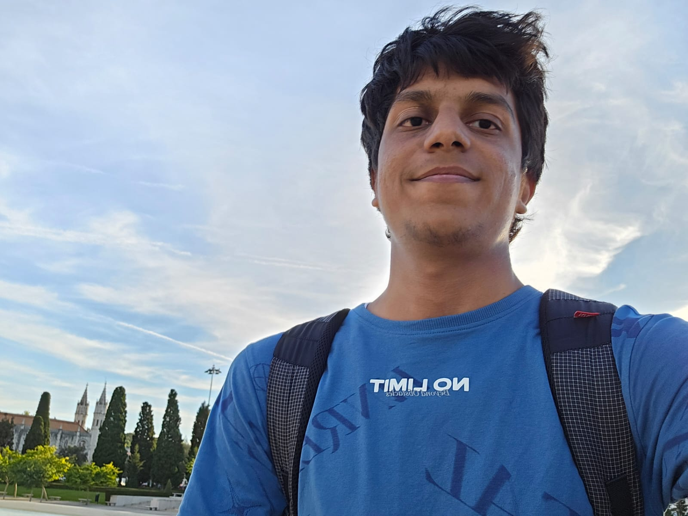

Sanat Agrawal
Dual Degree (B.Tech + M.Tech), Electrical Engineering
Indian Institute of Technology Bombay
I'm a final-year Dual Degree student working across AI research and applied machine learning. I'm drawn to speech and audio AI, large language models, and turning research into practical systems that ship. My own research spans neural speech synthesis, cross-lingual audio and text understanding, and speech recognition.
I recently spent a semester at EPFL, and have done research at Idiap and Arizona State University. Alongside research I build products as a founding engineer and work on my own side projects.
Education
-
Indian Institute of Technology Bombay2022 - 2027 GPA 9.54/10
Dual Degree (B.Tech + M.Tech), Electrical Engineering
Minor in Machine Intelligence and Data Science
-
École Polytechnique Fédérale de Lausanne (EPFL)Autumn 2025 GPA 5.61/6
Semester exchange, Switzerland
News
- 2026Two papers, Indic-CLAP and Timestamped Hindi ASR, submitted to ICASSP 2027.
- 2026Released indic-whisper-ctc-timestamps, a Whisper CTC model for word-level Hindi ASR timestamps, on Hugging Face.
- Sep 2026Concatenative Neural Speech Synthesis accepted at IEEE SLT 2026.
- 2025Awarded the Heyning-Roelli Scholarship (4,000 CHF) to fund an exchange semester at EPFL.
- 2024Selected globally for the funded Summer Research Initiative (SURI) ($5,000) at Arizona State University.
Publications
† denotes equal contribution.
Concatenative Neural Speech Synthesis
Accepted IEEE SLT 2026 Demo
Indic-CLAP: Text and Audio Understanding in Indic Languages via Cross-Lingual Distillation
Submitted ICASSP 2027 Demo
Experience
Research Experience
Visiting Student Researcher · Idiap Research Institute
Oct 2025 - Feb 2026Guide: Prof. Mathew Magimai-Doss
- Proposed a target-domain training-free concatenative speech synthesis approach, unifying classical unit selection with SSL-based speech analysis and kNN-based voice conversion.
- Showed that concatenating in SSL feature space (WavLM-Large) rather than the waveform domain improves perceived naturalness over a Festival TTS baseline.
- Demonstrated competitive zero-shot speaker similarity using only 0.9 hours of source speech.
- Co-authored a paper accepted at IEEE SLT 2026.
Undergraduate Researcher · Digital Audio Processing Lab, IIT Bombay
Mar 2026 - PresentGuide: Prof. Srikanth Raj Chetupalli
- Built Indic-CLAP, extending CLAP-style contrastive audio and text pretraining to nine Indic languages via cross-lingual distillation.
- Proposed a hybrid distillation objective, reaching 38.8% audio-to-text R@1 averaged over nine languages and surpassing the frozen CLAP teacher.
- Developed a character-level CTC head on Whisper's encoder for word-level Hindi ASR timestamps, matching WhisperX accuracy without an external aligner.
Research Intern · Arizona State University (SURI)
May 2024 - Jul 2024Guide: Prof. Ayan Mallik
- Built an all-loss-inclusive mathematical model of a DAB DC-DC converter in MATLAB that closely emulates the real hardware.
- Implemented a physics-informed neural network to estimate parametric uncertainties, reaching 92% accuracy.
- Applied adaptive loss-optimal control, reducing power losses by 67% under varying load conditions.
Work Experience
Founding Engineer · Novare Talent
Aug 2025 - Present- Built and shipped 3 production ML and software systems on Next.js, FastAPI and Supabase, serving 2,300+ users across 14 IIT campuses.
- Engineered a pgvector semantic search and LLM-reranking engine, plus a WhatsApp-native LLM agent that parses hiring intent into ranked shortlists.
- Built Arena X, a real-time 1v1 coding arena with ELO-based matchmaking over sandboxed test-case judging.
AI & Systems Intern · SalesAgent.ai
Jun 2025 - Jul 2025- Built a streaming ASR pipeline (faster-whisper) for Hindi and English code-switched telephony audio, with runtime language switching and confidence-based hallucination gating.
- Profiled the deployed pipeline end to end and found 99.9% of latency was model inference, redirecting the team's optimisation effort.
Projects
Academic & Course Projects
Autonomous Racing Agent
An RL agent navigating dynamic tracks on a 13x13 grid, optimized with CMA-ES over 100 generations. It reached 3.2x higher distance and over 80% lower crash rate than baselines.
LLM Decoding & Medusa
Implemented 4 decoding strategies on Llama-2 for Hindi to English translation, plus trie-based word-constrained and Medusa-style speculative decoding for 3x faster inference.
Reverse-Mode Autodiff Engine
Built an autodiff engine from scratch (EPFL CS-328) to train neural networks with no external ML framework, plus SVD/PCA face recognition and QR least-squares image deblurring.
Cough-Based Disease Detection
A dual-input BiLSTM and CNN architecture reaching 96.33% accuracy in tuberculosis detection and 94% in COVID-19 classification from cough audio, with SMOTE/RUS and MRMR feature selection.
Smart Walker
A Raspberry Pi smart walker with load cells, a custom PCB and ArUco-marker foot tracking for gait rehabilitation, robust to the occlusion failures of YOLO and OpenPose, with real-time haptic feedback.
16-bit Pipelined RISC Processor
A 16-bit RISC processor in VHDL with a 6-stage datapath, data-forwarding hazard mitigation and flag-based predicated execution, verified through a custom testbench.
Passion & Self Projects
AlphaSense AI
A solo, event-driven live trading system fusing LLM news sentiment, earnings-call audio and fundamentals into 7 strategies, validated by walk-forward backtesting and deployed unattended on AWS. Selected for the IITB-Groww INV.ENT program.
FitSurv
A real-time posture and rep-counting coach using Mediapipe pose tracking. A bicep-curl and push-up detector with joint-angle analysis, running under 0.1s latency at over 90% accuracy.
Aria-Open
An open-source, meeting-native AI that joins a real call, knows who is speaking, and decides whether to speak, act or stay silent. Its Conductor turn-and-action policy scores 100% action accuracy with 0% false interruptions on a meeting-competence benchmark.
Agentic Commerce
One chat, one plan, one checkout. An AI multi-retailer shopping flow that turns a natural-language request into a structured plan, runs real product search across stores, and completes a single checkout while fanning out per retailer. Built at HackNation 2026.